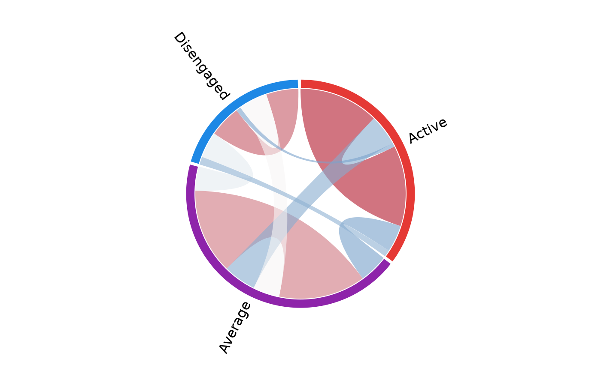
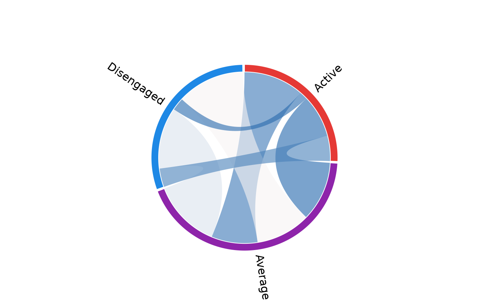
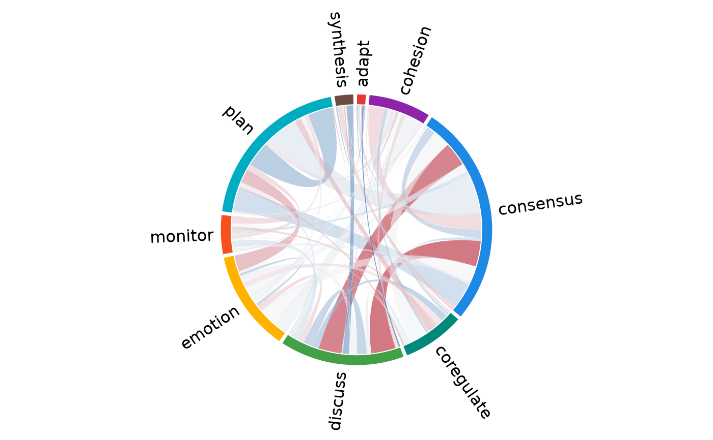

plot_chords() draws the transitions of a fit as a chord diagram with
cograph: the states are arcs around a circle and each transition is a
ribbon from its source arc to its target arc. The width of a ribbon shows how
much of the traffic the transition carries, and its colour can show whether
the transition is more or less frequent than independence predicts, so the
diagram shows where the transitions out of each state go, and which of the
frequent routes are also over-represented.
Ribbon width is the count (default) or the transition probability; ribbon
colour is the adjusted residual on a diverging scale (red over-represented,
blue avoided), or the lift, probability or count on a sequential scale. With
compare, a second fit on the same states, each ribbon is coloured by the
difference between the two fits in the colour quantity, which shows where two
groups differ.
The same display is plot(fit, type = "chord"). For the full table use
the residual heatmap of plot.lsa(); for a network layout,
plot_transitions(); for a test of group differences,
compare_lsa().
Arguments
- fit
An
lsafit fromlsa().- compare
Optional second
lsafit with the same states; ribbons are then coloured byfitminuscompare. DefaultNULL.- width
Ribbon width:
"count"(default) or"prob".- color
Ribbon colour:
"residuals"(default),"lift","prob"or"count".- significant
Draw only transitions whose residual p-value is below the fit's
alpha(defaultFALSE); ignored withcompare.- self_loops
Draw self-transitions (default
TRUE).- alpha
Ribbon opacity (default
0.6).- ...
Passed to
cograph::plot_chord(), for exampleticks,segment_width,label_sizeortitle.
Value
The value of cograph::plot_chord() (the drawn segments and
chords), invisibly; the plot is drawn on the current device.
Conditions
Errors carry the class lagdynamics_error and
lagdynamics_incompatible_fits when fit and compare have different
states.
Examples
fit <- lsa(engagement)
plot_chords(fit)

plot_chords(fit, width = "prob", self_loops = FALSE)

# Ribbons coloured by the difference between two groups
high <- lsa(subset(group_regulation_long, Achiever == "High"),
actor = "Actor", action = "Action", time = "Time")
low <- lsa(subset(group_regulation_long, Achiever == "Low"),
actor = "Actor", action = "Action", time = "Time")
plot_chords(high, compare = low)
